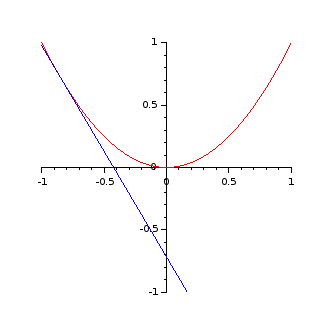

Télécharger :
On réalise une petite animation graphique, où l’on voit rouler sans glisser la droite tangente le long du graphe d’une fonction dérivable.

La plus grosse partie du travail est faite dans le fichier dessiner.sci, où l’on définit des fonctions sans les appeler.
Pour contrôler que tout fonctionne (debug), on utilise (au fur et à mesure) la console interactive de Scilab directement.
On trace la courbe d’équation $y = x^2$ pour $x \in [-1 ; 1 ]$ (segment défini par XMIN et XMAX).
linspace.Le tout est encapsulé dans une fonction dessinerParabole qui n’a pas de paramètre, et qui retourne une poignée e qui permet de manipuler l’apparence de l’entité graphique produite (ici la courbe parabole, donc).
function e = dessinerParabole()
t = linspace(XMIN, XMAX)
plot(t, t.^2)
e = gce()
cosmetiqueParabole(e) // optionnel
endfunctionChaque tangente est une droite. On trace donc simplement un segment en plaçant les deux points extrémaux.
La courbe de la fonction $f : x \mapsto x^2$ a pour tangente au point d’abscisse $a$ la droite d’équation $y - f(a) = f’(a) (x - a)$ soit ici $ y = 2 a (x - a) + a^2 = 2ax - a^2$.
function e = tracerTangente(a)
x = [ XMIN ; XMAX ] // vecteur colonne : 2 extrémités du domaine de définition
y = 2 * a * x - a^2 // équation de la tangente en a
plot(x, y)
e = gce()
cosmetiqueTangente(e) // optionnel
endfunctionGrâce à une boucle for, on appelle la fonction tracerTangente (a) plusieurs fois en faisant varier le paramètre a.
Ici, on choisit de garder a dans le segment $[-1 ; 1]$.
function tTangentesSimultane()
A = linspace(XMIN, XMAX, NOMBRE_DE_TANGENTES)
for a = A
tracerTangente(a)
end
endfunctionsleepExactement la même chose, mais on introduit un délai entre chaque tracé de tangente
function tTangentesAsynchrone()
A = linspace(XMIN, XMAX, NOMBRE_DE_TANGENTES)
for a = A
tracerTangente(a)
// attendre le temps indiqué (millisecondes) puis continuer :
sleep(100)
end
endfunctionNiels Abel disait de C. F. Gauss que
Il est comme un renard qui efface avec sa queue ses traces de pas dans le sable.
Il ne nous reste qu’à imiter cette tactique :
L’idée est, juste avant le tracé de chaque tangente, d’effacer la précédente.
Pour éviter que l’image ne clignote à cause de la latence entre l’effacement et le tracé suivant, on utilise le couple drawlater() et drawnow() pour synchroniser les deux étapes.
function tTangentesEffacer()
A = linspace(XMIN, XMAX, NOMBRE_DE_TANGENTES)
e = []
for a = A
drawlater()
delete(e)
e = tracerTangente(a)
drawnow()
sleep(40) // ms
end
endfunctionNous arrivons enfin au fichier dessiner.sce, dans lequel on passe des instructions effectives.
On commence par charger en mémoire les fonctions définies par le fichier dessiner.sci, avec quelques constantes.
Pour que l’appel de dessiner.sci fonctionne, il faut que le répertoire courant pour Scilab soit celui où est enregistré dessiner.sci !
On peut vérifier
pwd (print working directory) que l’on est dans le bon répertoirels (list files) que le répertoire courant contient le fichier.Si ce n’est pas le cas, il faut
ou bien naviguer vers ce répertoire dans Scilab
cd (change directory)ou bien copier ou déplacer le fichier dans ce dossier affiché par pwd par exemple grâce à votre gestionnaire de fichiers favori
// paramétrer x = [ -1 ; 1 ]
XMIN = -1
XMAX = 1
// à ajuster
NOMBRE_DE_TANGENTES = 100
exec("./dessiner.sci", -1)Il ne reste qu’à lancer la fonction qui nous intéresse.
clf()
axes = gca()
cosmetiqueAxes(axes) // optionnel
dessinerParabole()
//tTangentesAsynchrone() // version image fixe
tTangentesEffacer() // version image animéeTout ce qui suit est optionnel et peut être modifié. Ce sont essentiellement des réglages de l’apparence graphique.
Noter tout de même dans la fonction cosmetiqueAxes la techique pour fixer les bornes des axes. Ce type de réglage est souvent nécessaire pour la création d’images animées.
//cosmetique
function cosmetiqueAxes(axes)
axes.isoview = "on"
//=====================================================================
// empécher les nouveaux dessins de décaler les bornes des axes //
// très utile pour les images animées //
axes.auto_scale = "off" //
axes.data_bounds = [-1, -1; 1, 1] // à adapter //
//=====================================================================
axes.x_location = "origin"
axes.y_location = "origin"
endfunction
function cosmetiqueParabole(e)
e.children.foreground = 5
endfunction
function cosmetiqueTangente(e)
e.children.foreground = 13
endfunction
//fin cosmetique